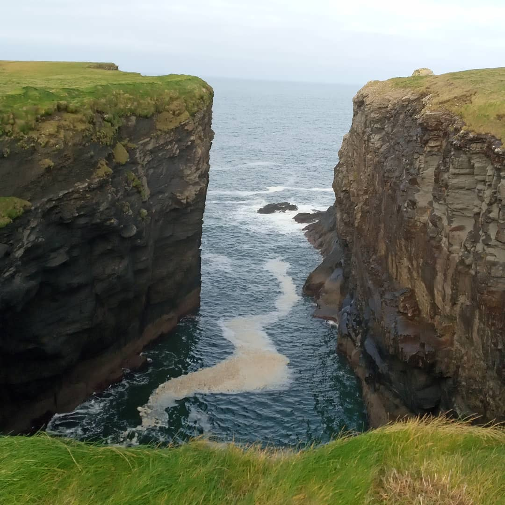
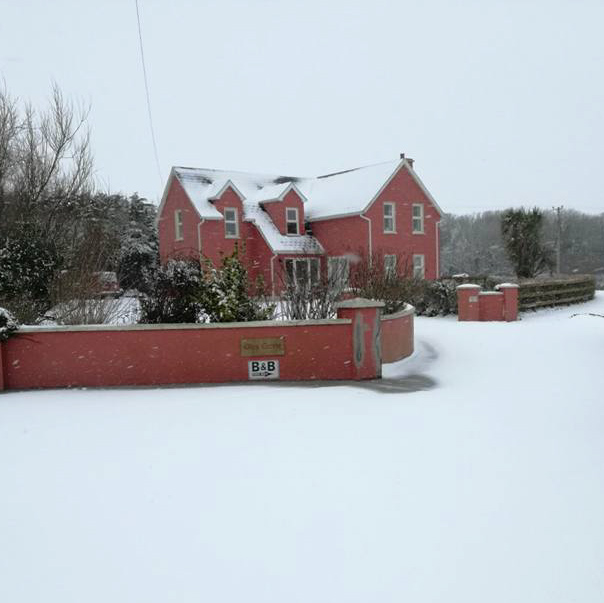
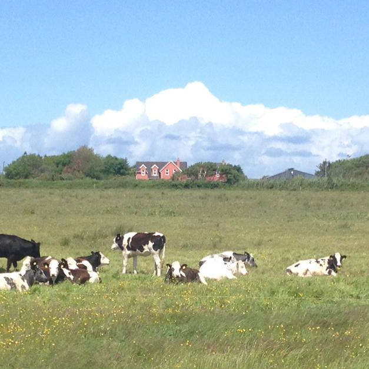
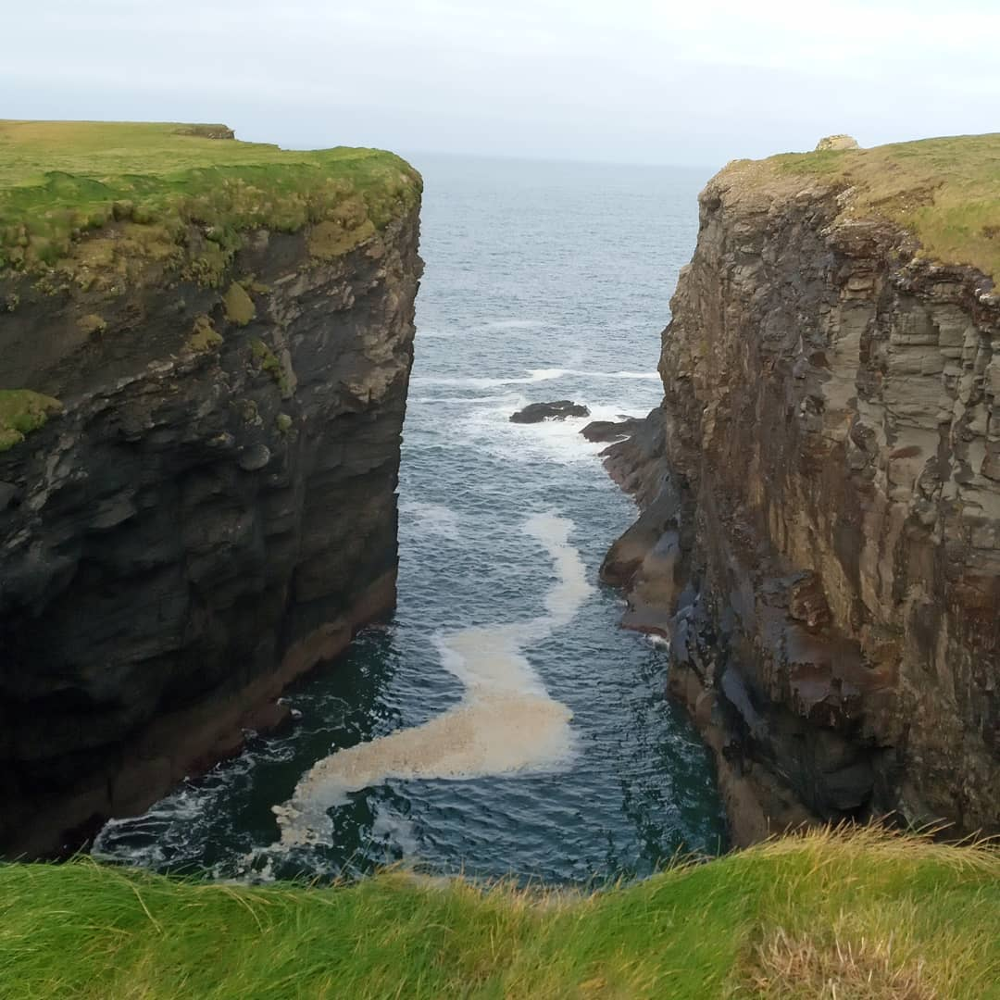
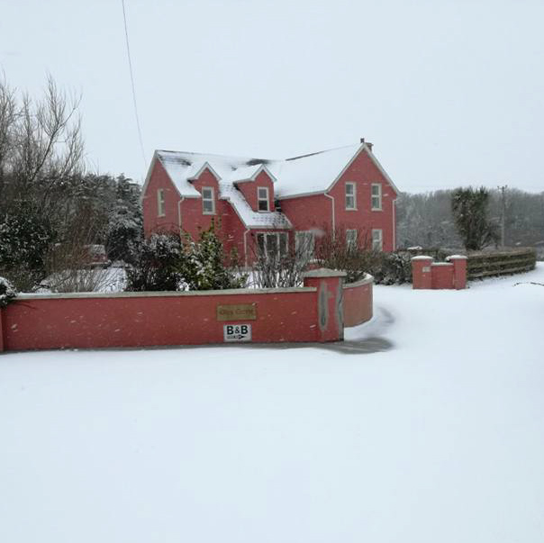
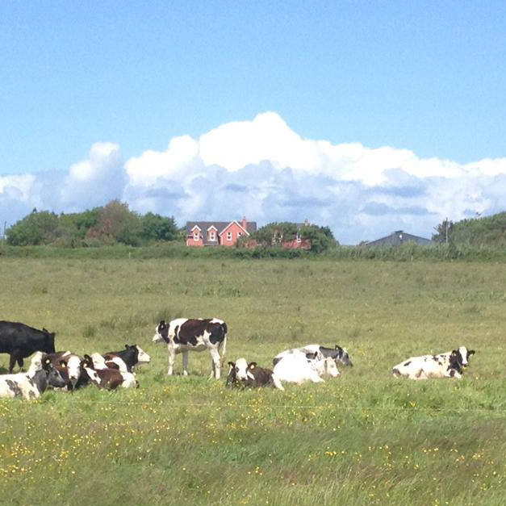
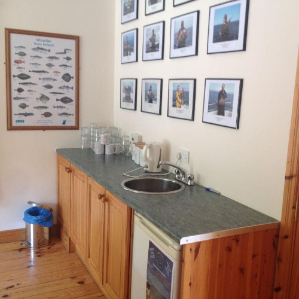
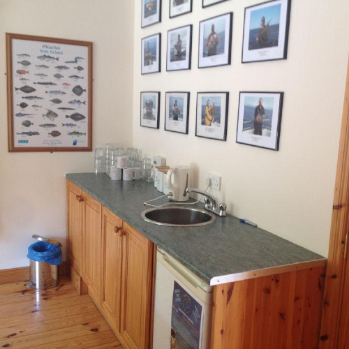

Welcome to Glencarrig Farmhouse B&B
About us
A Farmhouse Bed and Breakfast overlooking the Shannon Estuary and
just outside the village of Carrigaholt -
Glencarrig - is the perfect base for exploring the
Loop Head Peninsula and discovering what makes this area such a
gem on the Wild Atlantic Way.
With 3 star Irish Tourist
Approval, Glencarrig B&B offers the best of Irish bed and
breakfast hospitality.
Offering its Guests the best of comfort, Glencarrig has four well
sized rooms, all en suite, a guest sitting room and a games room
with tea and coffee making facilities. Wi Fi is available free to
all guests. Mary your host is well known for her baking and
cooking. You will be welcomed on arrival with fresh baking. The
breakfast menu which has a choice for all and for which we use
locally produced products, will always set you up for the day
ahead. Feel free to contact us on the phone number or email listed
above for any special requests, for example extra beds and prices
for children staying in your own room.
 





Glencarrig is right in the centre of the Loop Head Peninsula which was voted the Best Place to Holiday in Ireland by the Irish Times in 2013. For the outdoor enthusiast there is just so much to do. Be it Fishing, Dolphin watching, Walking, Cycling, Horse riding and Water sports it’s all available. There are also lovely places to swim or just lie in the sun and take in the views. Our local village is an old fishing village which has two piers on the lower Shannon Estuary. The village has a Shop, a Post Office and 4 Pubs! All of them have live music at times and one of them, the Long Dock has won awards for its food. Indeed in 2015 it was voted Irelands food pub of the year. Glencarrig is well within walking distance of Carrigaholt and we are always ready to give you a lift there or back. Some useful web sites of local businesses if you are planning a trip here are Fishing Dolphin Watching Walking We can arrange Bike hire, just ask, and there is a 68km well signed Loop Head cycle that runs past Glencarrig. Please ask if there are other activities you would like or check out Loop Head Tourism
Our Location
Glencarrig is just over a mile (2km) from the village of Carrigaholt in the centre of the Loop Head Peninsula and is signposted from the village. Carrigaholt is on the Wild Atlantic Way and about 7 minutes direct drive from Kilkee. Shannon Airport is the nearest Airport and about an hour and a quarter away. Dublin and Cork airports are just over 3 hours driving away. You can plan your route on the attached map but our county town is Ennis which is well served by a fine motorway the M18. If you are driving from Limerick, Dublin or Cork you will be coming north on this road or if driving from Galway you will be heading south. In any case you take exit 12 onto the N85 which is signed posted for Ennis and Kilrush. After this exit you pick up the N68 to Kilrush and then the N 67 to Kilkee. From Kilkee you pick up the signs for Loop Head and Carrigaholt. There is a Train service to Ennis and a Bus service to Kilkee but no public transport west of that. We can arrange a pick up for you from Kilkee if required.
Accommodation
Glencarrig B&B has 4 guest bedrooms. All are spacious and are ensuite. 3 of the bedrooms are upstairs and 2 of these have a double and single bed and 1 has a double bed. Downstairs there is also a twin bedroom with 2 single beds. All the bedrooms are supplied with hairdryers and TV’s as you would expect, but what is a definitive plus is the fantastic views out over the Shannon estuary, Kilcredaun point and the Kerry Mountains. Waking up to such views just never gets boring! Downstairs there is a Guest Lounge that opens out onto the Garden and Patio which is a lovely place to sit on a good evening. There is also a games room with a full sized Pool Table and Tea and Coffee making facilities. There is a drying area for any wet coats and Wi Fi is of course available free to all our guests. If you have young children we will be happy to set up an extra bed in your room for them or if you have any other requirements please do ask.
 

Facilities:
- Free WiFi internet
- Lounge
- Wakeup call
- 24h reception
Parking:
- On-site FREE parking
Dining:
- Continental breakfast
- Cooked breakfast
Activities
Deep sea fishing
Carrigaholt is an ideal harbour to go deep sea fishing from.
Being in an estuary it is possible to go fishing in all weather
conditions and can provide a relaxing days fishing in shallow
bays. The Estuary can produce excellent Ray fishing, double
figure Bull Huss, flat fish like Plaice, Dab and Turbot, and in
season is one of the best places to fish for Tope in Ireland.
Because its waters are so nutrient rich the estuary is also home
to many Bottle Nose Dolphins and these lovely creatures often
pay us a visit on our way to the fishing grounds.
As you head out to Loop head you will have time to take in the
wonderful scenery. The north side of the estuary is bordered by
low cliffs that are of great interest to geologists and the
magnificent view of Mount Brandon rises in front of you. At the
end of the peninsula you are starting to get into the best
fishing grounds to be found in Ireland.
Interested? Want to know a little bit more about fishing? Reach
out!
Visit
fishandstay.com and
grab yourself a great deal.
Sightseeing
Carrigaholt, (translation: ‘Rock of the Fleet’) is a picturesque fishing village on the southern side of Loop Head, about 10 kilometres southwest of Kilkee. Set within an important ecological environment, the village lies at the mouth of the Moyarta river, which flows into the Mouth of the Shannon about 15 kilometres from the westernmost extremity of the peninsula. The village has an attractive centre, with distinctive streetscapes and quaint local character, and several pubs and restaurants. The harbour, the church (built 1882-1883) and, most important, the ruins of Carrigaholt Castle are the most distinctive local landmarks. Carrigaholt also boasts a safe, sandy beach for swimming and water sports. The most stunning landmarks around Carrigaholt:
Visit here for more information.
Dolphin watching
Ireland’s greatest river opens out to the Atlantic Ocean at
Carrigaholt, Co. Clare - home to Europe’s largest group of
bottlenose dolphins.
With approximately 200 individuals
here at the Mouth of the Shannon, the dolphin encounter rate
with Dolphinwatch is one of the best in the world.
The passenger ship, Draíocht ("Magic"), skippered by Geoff
Magee, departs from Carrigaholt Castle Pier to take you on an
extraordinary adventure. Geoff’s fascinating commentary keeps
you informed throughout the trip.
The competent and
friendly crew are on board to ensure your comfort, safety and
enjoyment.
If you fancy a boat trip around our beautifull river and would like to meet some dolphins while you're at it? Let's make it happen!
Bookings & more information here.
Amazing Food
The Long Dock pub and restaurant, Carrigaholt is the place for you when travelling along the Wild Atlantic Way in the West of Ireland. There are so many beautiful things to see, eat, drink, experience and even capture on the West Coast of Clare, including the superb restaurant ‘The Long Dock’. Whether it is sitting outside on the benches eating a cold seafood platter on a sunny summer day or drinking a creamy pint of Guinness by the open fire during them dark cold evenings of winter, Tony and Imelda are more than welcoming to each visitor who ventures through them red doors. Imelda and Tony have perfected what any tourist wishes to experience on their visit to the lovely tranquil Carrigaholt. “We always welcome every stranger and treat them as we would the locals, little bit of chat, comfort and always leaving them with a smile on their faces”
Fancy a warm bowl of Tony’s award winning seafood chowder? A slice of Imelda’s freshly baked home-made brown bread? Wait no more - we're here to deliver.
Click here to check it out.